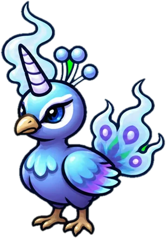

 Psychic
Psychic Ghost
GhostTap a stage to read its story.
Specklet is a small compact bird in deep blue-purple feathers with a short tail and a single glowing ember floating above its head on a wisp of blue flame. Its small wings are held half-open and its round eyes carry a distant, slightly dreaming quality. It hops through the Psychic Temple's lower paths, pausing to stare at empty spaces where it is clearly seeing something no one else can. Children who follow Specklet claim it always stops at spots where something interesting is about to happen - nobody has disproved this.
Field note: Specklet stops and stares at a spot for exactly three seconds before something unusual happens there - temple-keepers have learned to pay attention.
Light Grove. Specklet and its family are found in the Light Grove. See everyone who lives there.
Share a Bond Food that matches its types to become friends. Specklet loves:
A Bond Food is not a trick. It joins your spirit with the Kimuro's spirit, and only when it chooses you.
Print the Kimuro adventure packs: mazes, cards, a board game and Bond Mark medals.
See the printable packs